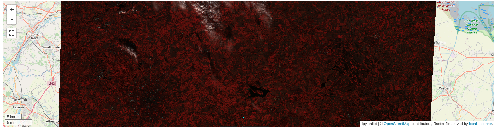
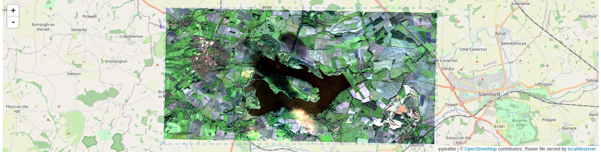

# If needed you can install a package in the current AppHub Jupyter environment using pip
# For instance, we will need at least the following libraries
import sys
!{sys.executable} -m pip install --upgrade pyeodh pandas matplotlib numpy pillow foliumDemonstration for DEFRA
Description & purpose: This Notebook is designed to showcase the initial functionality of the Earth Observation Data Hub. It provides a snapshot of the Hub, the pyeodh API client and the various datasets as of September 2024. The Notebook “user” would like to understand more about the satellite data available for their test areas. This user is also interested in obtaining a series of smaller images and ultimately creating a data cube. The Notebook series (of 3) is designed in such a way that it can be run on the EODH AppHub (Notebook Service) or from a local environment.
Author(s): Alastair Graham, Dusan Figala, Phil Kershaw
Date created: 2024-09-05
Date last modified: 2024-09-18
Licence: This notebook is licensed under Creative Commons Attribution-ShareAlike 4.0 International. The code is released using the BSD-2-Clause license.
Copyright (c) , All rights reserved.
Redistribution and use in source and binary forms, with or without modification, are permitted provided that the following conditions are met:
Redistributions of source code must retain the above copyright notice, this list of conditions and the following disclaimer. Redistributions in binary form must reproduce the above copyright notice, this list of conditions and the following disclaimer in the documentation and/or other materials provided with the distribution. THIS SOFTWARE IS PROVIDED BY THE COPYRIGHT HOLDERS AND CONTRIBUTORS “AS IS” AND ANY EXPRESS OR IMPLIED WARRANTIES, INCLUDING, BUT NOT LIMITED TO, THE IMPLIED WARRANTIES OF MERCHANTABILITY AND FITNESS FOR A PARTICULAR PURPOSE ARE DISCLAIMED. IN NO EVENT SHALL THE COPYRIGHT HOLDER OR CONTRIBUTORS BE LIABLE FOR ANY DIRECT, INDIRECT, INCIDENTAL, SPECIAL, EXEMPLARY, OR CONSEQUENTIAL DAMAGES (INCLUDING, BUT NOT LIMITED TO, PROCUREMENT OF SUBSTITUTE GOODS OR SERVICES; LOSS OF USE, DATA, OR PROFITS; OR BUSINESS INTERRUPTION) HOWEVER CAUSED AND ON ANY THEORY OF LIABILITY, WHETHER IN CONTRACT, STRICT LIABILITY, OR TORT (INCLUDING NEGLIGENCE OR OTHERWISE) ARISING IN ANY WAY OUT OF THE USE OF THIS SOFTWARE, EVEN IF ADVISED OF THE POSSIBILITY OF SUCH DAMAGE.
Links: * Oxidian: https://www.oxidian.com/ * CEDA: https://www.ceda.ac.uk/ * EO Data Hub: https://eodatahub.org.uk/
What is the EODH?
The Earth Observation Data Hub is:
“A UK Pathfinder project delivering access to Earth Observation (EO) data for effective decisionmaking across government, business and academia. The Earth Observation DataHub (EODH) brings together an expert project delivery team and industrial partners in an ambitious project… Users of the Hub will be able to explore areas of interest in the UK and across the globe… It will also enable selected users to support their own analyses, services and tools using the Hub’s workflow and compute environments.”
More details can be found online at https://eodatahub.org.uk/
Components of the Hub include:
- A Resource Catalogue - a STAC compliant catalogue of open and commercial satellite imagery, climate data, model results, workflows and more
- A Workflow Runner - a dedicated piece of cloud infrastructure to horizontally scale workflow requirements
- A Web Presence - an intuitive user interface to allow account management, data discovery and mapping
- An App Hub - a science portal providing access to a Jupyter lab environment
Presentation set up
The following cell only needs to be run on the EODH AppHub. If you have a local Python environment running, please install the required packages as you would normally.
EODH: it’s data analysis
The EODH AppHub (Notebook Service) can be used with pyeodh and other libraries (installed using pip) to analyse data and outputs. The following workbook provides a couple of examples of how this could be undertaken.
# Imports
import pyeodh
import os
import shapely
import geopandas as gpd
import folium
from localtileserver import TileClient, validate_cog, get_leaflet_tile_layer
from ipyleaflet import Map, ScaleControl, FullScreenControl
import dask.distributed
import folium
import requests
from requests import HTTPError
import urllib.request
from io import BytesIO
from PIL import Image
from IPython.display import display
from pystac_client import Client
from odc.stac import configure_rio, stac_load # the data cube bit
#import shapely.geometrya) Viewing images with specific band configurations
Once you have the URL to the Cloud Optimised Geotiff from the STAC records held in the resource catalogue it is possible to view different band combinations. The following code uses the URL to the Sentinel 2 ARD image discovered in the Data Discovery notebook and displays an interactive false colour composite.
# Path to raster (URL or local path)
data_url = 'https://dap.ceda.ac.uk/neodc/sentinel_ard/data/sentinel_2/2023/11/17/S2A_20231117_latn527lonw0007_T30UXD_ORB137_20231117131218_utm30n_osgb_vmsk_sharp_rad_srefdem_stdsref.tif'
# Check that the dataset is a valid COG. If invalid, returns False
validate_cog(data_url)True
# First, create TileClient using example file
dclient = TileClient(data_url)
# Create 2 tile layers from same raster viewing different bands
l = get_leaflet_tile_layer(dclient, indexes=[6, 2, 1])
# Make the ipyleaflet map
m = Map(center=dclient.center(), zoom=dclient.default_zoom)
m.add(l)
m.add_control(ScaleControl(position='bottomleft'))
m.add_control(FullScreenControl())
m
# we can use the same tool to view rendered data stored locally e.g. in a user's workspace.
map = TileClient('data/S2A_clip_rend.tif')
map
b) Towards a data cube
This is very much work in progress, and follows the outline of the tutorial supplied here. The tutorial at that link is designed to create a data cube in the USA using data held in an Element 84 STAC catalogue. Here we alter the processing to make use of the CEDA STAC catalogue. Ultimately both of these datasets will be held within the EODH resource catalogue and this code will be rewritten to utilise pyeodh and the EODH data holdings.
# Set up
# A helper method for changing bounding box representation to leaflet notation
# (lon1, lat1, lon2, lat2) -> ((lat1, lon1), (lat2, lon2))
def convert_bounds(bbox, invert_y=False):
x1, y1, x2, y2 = bbox
if invert_y:
y1, y2 = y2, y1
return ((y1, x1), (y2, x2))
# Areas of Interest
rut_pnt = shapely.Point(-0.683261054299237, 52.672193937442586) # a site near Rutland
thet_pnt = shapely.Point(0.6715892933273722, 52.414471075812315) # a site near ThetfordThe next thing the user needs to do is find some data in a STAC catalogue that intersects with the site of interest for a given time period. Therefore, we need to know what datasets are available, over what period and for what locations.
# Find some data using STAC
# note: here we are using `pystac`. This will be replaced by `pyeodh` in future.
url = "https://api.stac.ceda.ac.uk/"
client = Client.open(url)
for coll in client.get_collections():
print(f"{coll.id}: {coll.description}")
sentinel2_ard = client.get_collection('sentinel2_ard')
sentinel2_ard.get_items()
# check the spatial and temporal extent of the collection
print('')
print("spatial extent:", sentinel2_ard.extent.spatial.bboxes)
print("Temporal range:", [str(d) for d in sentinel2_ard.extent.temporal.intervals[0]])cmip6: CMIP6
cordex: CORDEX
land_cover: land_cover
sentinel1: Sentinel 1
sentinel2_ard: sentinel 2 ARD
sst-cdrv3-collection: collection of EOCIS SST CDR V3
ukcp: UKCP
spatial extent: [[-9.00034454651177, 49.48562028352171, 3.1494256015866995, 61.33444247301668]]
Temporal range: ['2023-01-01 11:14:51+00:00', '2023-11-01 11:43:49+00:00']# Find imagery that intersects with the site in Rutland
# Uncomment max_items to limit the seatch to a set number of items
item_search = client.search(
collections=['sentinel2_ard'],
intersects=rut_pnt,
query=[
'start_datetime>=2023-04-01',
'end_datetime<=2023-10-01',
'eo:cloud_cover<=75.0'
],
# max_items=10,
)
items = list(item_search.items())
len(items)30Now that we know we have available data we can start to build out a data cube.
# First we create a dask client
clientd = dask.distributed.Client()
configure_rio(cloud_defaults=True, aws={"aws_unsigned": True}, client=client) # sets up gdal for cloud use
display(clientd)print(f"Found: {len(items):d} datasets")
# Convert STAC items into a GeoJSON FeatureCollection
stac_json = item_search.item_collection_as_dict()Found: 30 datasetsgdf = gpd.GeoDataFrame.from_features(stac_json, "epsg:4326")
gdf.columnsIndex(['geometry', 'file_count', 'start_datetime', 'end_datetime',
'NSSDC Identifier', 'created', 'Instrument Family Name',
'Platform Number', 'Datatake Type', 'esa_file_name',
'Ground Tracking Direction', 'datetime', 'instance_id', 'size',
'Product Type', 'Instrument Family Name Abbreviation',
'Start Orbit Number', 'eo:cloud_cover', 'Start Relative Orbit Number',
'updated', 'Instrument Mode', 'EPSG'],
dtype='object')# Plot an outline of the data items as a sense check
f = folium.Figure(width=600, height=300)
m = folium.Map(location=[52, 2], zoom_start=5).add_to(f)
gdf.explore(
"esa_file_name",
categorical=True,
tooltip=[
"esa_file_name",
"datetime",
"eo:cloud_cover",
],
popup=False,
legend=False,
style_kwds=dict(fillOpacity=0.1, width=2),
name="STAC",
m=m,
)# Construct the dask dataset
# Since we will plot it on a map we need to use `EPSG:3857` projection
crs = "epsg:3857"
zoom = 2**5 # overview level 5
xx = stac_load(
items,
crs=crs,
resolution=10 * zoom,
chunks={"x": 2048, "y": 2048}, # <-- use Dask
groupby="solar_day",
)
print(f"Bands: {','.join(list(xx.data_vars))}")
#display(xx)Bands: cloud,cloud_probability,thumbnail,topographic_shadow,cog,valid_pixels,saturated_pixelsWe are currently looking into workarounds for a known conflict of using the eo STAC extension. Once a suitable way forward is identiified a full description of how to create and manipulate the CEDA Sentinel 2 ARD in a data cube (generated from STAC records) will be posted in the training materials repository.